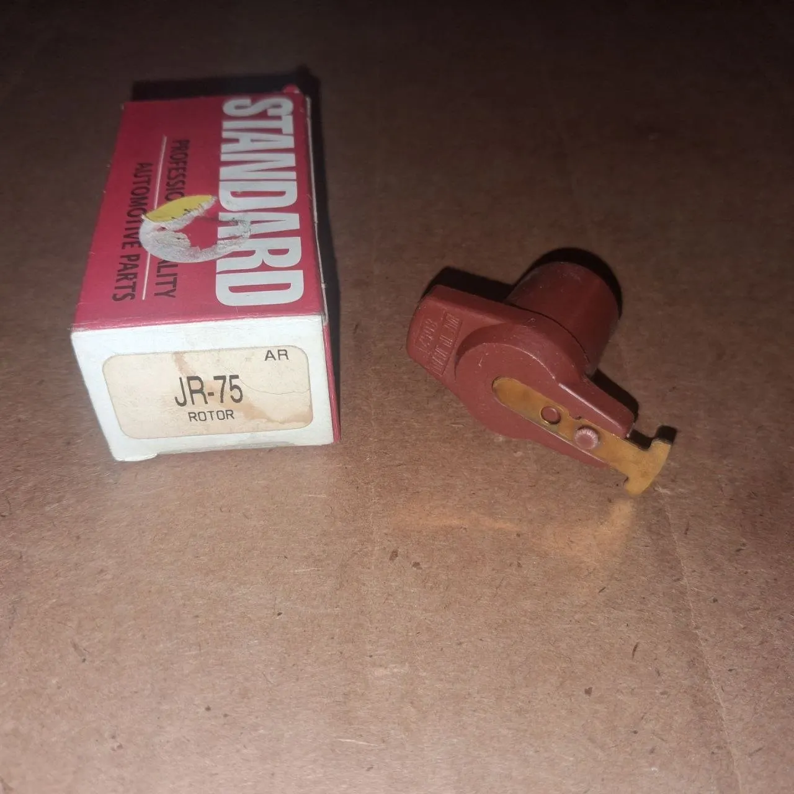

Standard JR-75 Distributor Rotor Toyota Corolla 72-74 Corona Carina Celica 1.6L
Auto Parts & Accessories
$14.99
Shipping: Free UPS Ground
Only 1 left
Fitment
Part numbers
- JR-75
Interchange
- JR75T
- EP324
- D571
- 4R1114
- JR75
Fits (examples)
- 1971-1979 Toyota Corolla
- 1976-1980 Chevrolet LUV
- 1985 Chevrolet Spectrum
- 1985-1988 Chevrolet Sprint
- 1989-1990 Chevrolet Tracker
- 1985-1989 Dodge Ram 50
- 1989-1995 Geo Tracker
- 1983-1984 Isuzu I-Mark
- 1985-1988 Mitsubishi Cordia
- 1985-1989 Mitsubishi Mighty Max
- 1985-1988 Mitsubishi Tredia
- 1985-1988 Pontiac Firefly
- 1985 Pontiac Sunburst
- 1980-1987 Subaru Brat
- 1985-1987 Subaru DL
- 1979 Subaru FE
- 1976-1979 Subaru GF
- 1985-1989 Subaru GL
- 1985 Subaru GL-10
- 1980-1982 Subaru GLF
- 1977-1987 Subaru Standard
- 1985-1986 Subaru XT
- 1985-1988 Suzuki Forsa
- 1980-1984 Suzuki SJ410
- 1989-1990 Suzuki Sidekick
- 1971-1973 Toyota Carina
- 1972-1974 Toyota Celica
- 1972-1974 Toyota Corona
- 1972 Toyota Mark II
- 1972-1974 Toyota Pickup
- 1984-1986 Toyota Tercel
495 eBay compatibility rows collapsed to these ranges.
Confirm the part fits your application before you order. Part numbers and example vehicles are aids, not a guarantee.